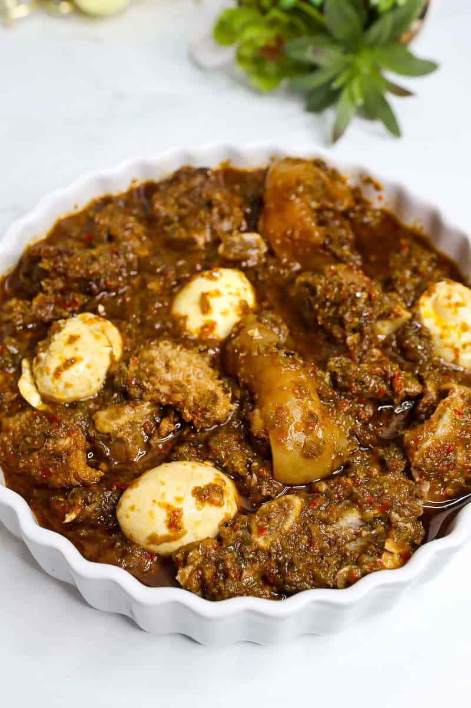

Ayamase Stew AKA Ofada Stew

Ayamase stew, also known as Ofada stew or Nigerian designer stew,
is one of the many types of stews that is enjoyed in Nigeria for its rich taste
and spicy kick. It is also known by other names such as Aya Mase, obe-iresi,
designer stew, and obe dudu (Dark soup).
It is made with green bell peppers, onions, and a variety of meats,
often including offal or beef, and it's spiced using indigenous ingredients such as
the locust bean, and this gives it a distinct, delicious taste.
My kids even know it's a special day when they smell Ayamase cooking!
Ingredients
- Assorted Meats: different meats like beef or tripe, cooked and simmered in the sauce.
- Green bell peppers: These give the sauce its signature green color. They have a mild, slightly sweet flavor that balances the heat of the habanero.
- Onion: blended with the pepper to thicken and give the sauce a rich texture.
- Habanero Rodo: Add heat to the sauce.
- Locust Bean: adds an earthy, umami flavor to ayamase.
- Beef Stock: infuses the sauce with beef flavor, making it even more satisfying with a well-rounded taste.
- Ground crayfish: this is optional, but it enhances the taste of the sauce.
- Palm Oil: adds a smoky flavor to the dish.
- Boiled Eggs: one of the major sources of protein in Ayamase. The hard-boiled eggs are peeled and simmered in the sauce to absorb earthy flavors.
- Salt: to taste
Steps
- Rinse and roast the pepper and onion: Spray the peppers and onion with oil and roast them in the air fryer at 400°F for 15 - 20 minutes until they have black spots. You can also roast in the oven at 425°F for 20 - 25 minutes.
- Blend the peppers: Leave to cool slightly and blend in the food processor to a rough consistency.
-
Heat the Palm Oil: In a clean pot, add the palm oil and let it melt on medium heat without bleaching it.
-
Add onions and locust beans: Once the oil is melted but not bleached, add the diced onions, locust beans, and ground crayfish. Stir and leave to cook over low heat for about 5 minutes. This way, your oil will not be smoky.
-
Add the blended Pepper Mix: Pour in the blended pepper, stir it all together, cover it up, and allow it to cook for 3 minutes over medium heat.
-
Add Beef Stock and season: Pour in the beef stock, season with salt and more ground crayfish.
-
Add the protein: stir in the cooked beef, tripe, ponmo, and boiled egg. Stir everything together and let it simmer on low heat till your desired consistency. The low heat allows the beef and egg to absorb the rich flavors of the sauce.
-
Serve: Ayamase stew can be served with Ofada Rice or boiled or fried plantains, Yam, etc. Enjoy!
Home >